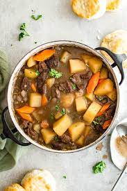

Beef Stew

Delicious Beef Stew to warm your bones.
This classic French beef stew is the ultimate cold weather comfort food. After a few hours in the oven, the meat becomes meltingly tender and enveloped in a rich wine sauce.
Ingredients
- 3 pounds boneless beef chuck
- 2 teaspoons salt
- 1 teaspoon freshly ground black pepper
- 3 tablespoons olive oil
- 2 medium yellow onions, cut into 1-inch chunks
- 7 cloves garlic, peeled and smashed
- 2 tablespoons balsamic vinegar
- 1½ tablespoons tomato paste
- ¼ cup all-purpose flour
Steps
- Preheat the oven to 325°F and set a rack in the lower middle position.
- Pat the beef dry and season with the salt and pepper. In a large Dutch oven or heavy soup pot, heat 1 tablespoon of the olive oil over medium-high heat until hot and shimmering.
- Brown the meat in 3 batches, turning with tongs, for about 5 minutes per batch; add one tablespoon more oil for each batch.
- Add the onions, garlic and balsamic vinegar; cook, stirring with a wooden spoon and scraping the brown bits from bottom of the pan, for about 5 minutes.
- Add the tomato paste and cook for a minute more. Add the beef with its juices back to the pan and sprinkle with the flour.
- Stir with wooden spoon until the flour is dissolved, 1 to 2 minutes. Add the wine, beef broth, water, bay leaf, thyme, and sugar. Stir with a wooden spoon to loosen any brown bits from the bottom of the pan and bring to a boil.
- Cover the pot with a lid, transfer to the preheated oven, and braise for 2 hours.